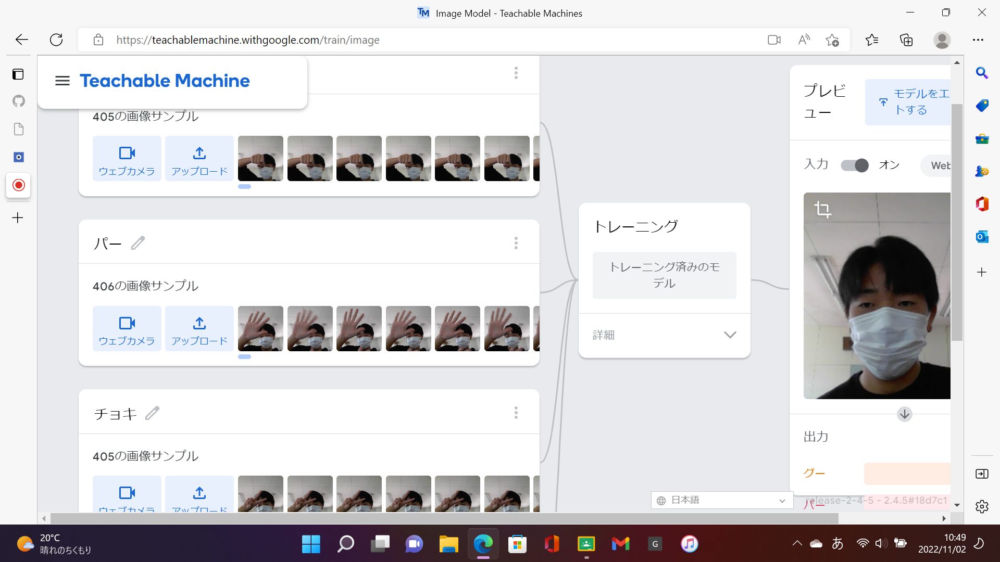
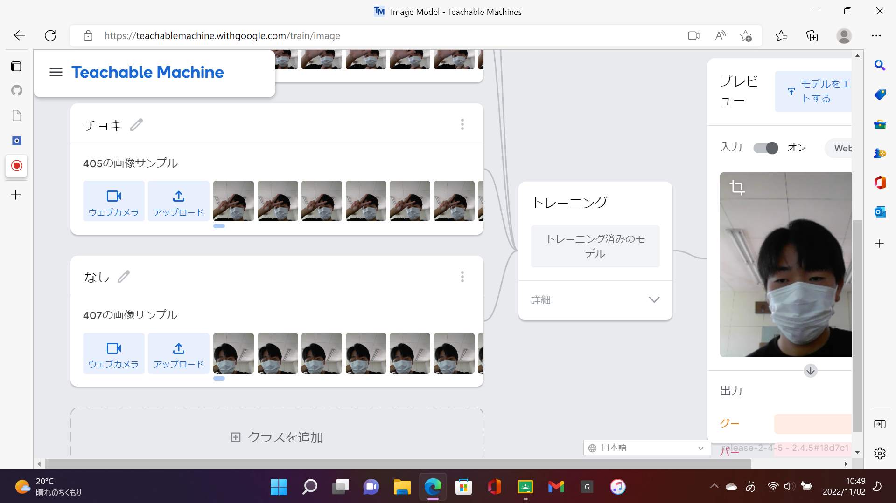

第2週目
2-1 １週目のレポートをHTMLで作る
１週目のレポート
1.内容
Githubを使って、１週目のレポートをHTMLで作った。
2.感想
普段、Githubを使うことがないからわからなかったが、教わってから１週目のレポートを完成させたとき、達成感を感じたので、この調子で２週目と３週目も完成させたいと思う。
2-2 機械学習体験


1.内容
Teachable Machineを使用して、人工知能に「グー」、「チョキ」、「パー」、「なし」を画像データをもとに区別させるようにした。
2.感想
人工知能を使うのは初めてで、自分でプログラムをして自由にできることはとても興味を持てた。
2-3 VR（バーチャルリアリティー：Virtual Reality）の体験
1.内容
VRを使ってVR空間での会議室を見て、実際に動いてみた。
2.感想
VR体験はなかなかできないことで、みんなもはしゃいでいたし、自分の目の前に新たな空間が広がり、とても貴重な体験ができた。